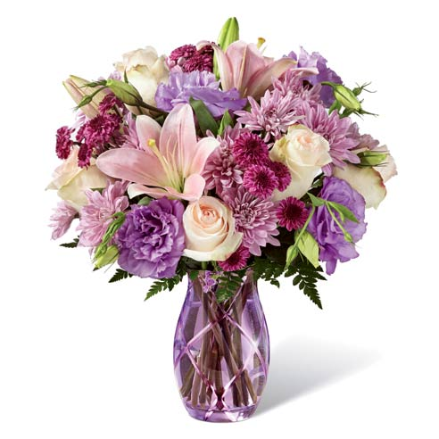
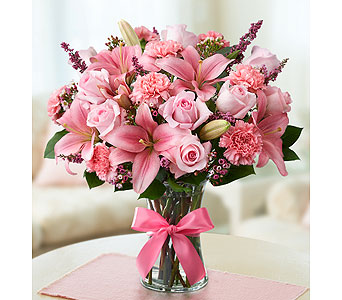

{% extends 'base.html' %}
{% block title %}About Page{% endblock %}

{% block content %}
    <div id="ass3_1">
            {% block footer %}
                {{ super() }}
    <footer id="footer_ass3_1"> Hello, {{ session['name'] | default('Stranger', True) | upper }}! here you can find a very
    big various of flowers. With the flowers you pick you can make your own bouquet or use the bouquets
    that are already exists in the store. </footer>
            {% endblock %}

    <div class="container" id="container_ass3_1">
    <h3>Here are the {{ bouquets | length }} that are already exist in our store:</h3>

        <ol id="ass3_1_bouquets">
        {% for bouquet in bouquets %}
            <li>
                {{ bouquet }} <br>
                {% if bouquet == 'Andy Bouquet' %}
                    
                {% elif  bouquet == 'Camilla Bouquet'%}
                     
                {% elif bouquet == 'White Bloom Bouquet' %}
                     
                {% else %}
                     
                {% endif %}
            </li>
        {% endfor %}
     </ol>
    <p> If you want to search the types of flowers we have in our store <br>
        <a href="{{url_for('assignment3_2')}}">CLICK HERE!</a></p>
    </div>
    </div>

{% endblock %}